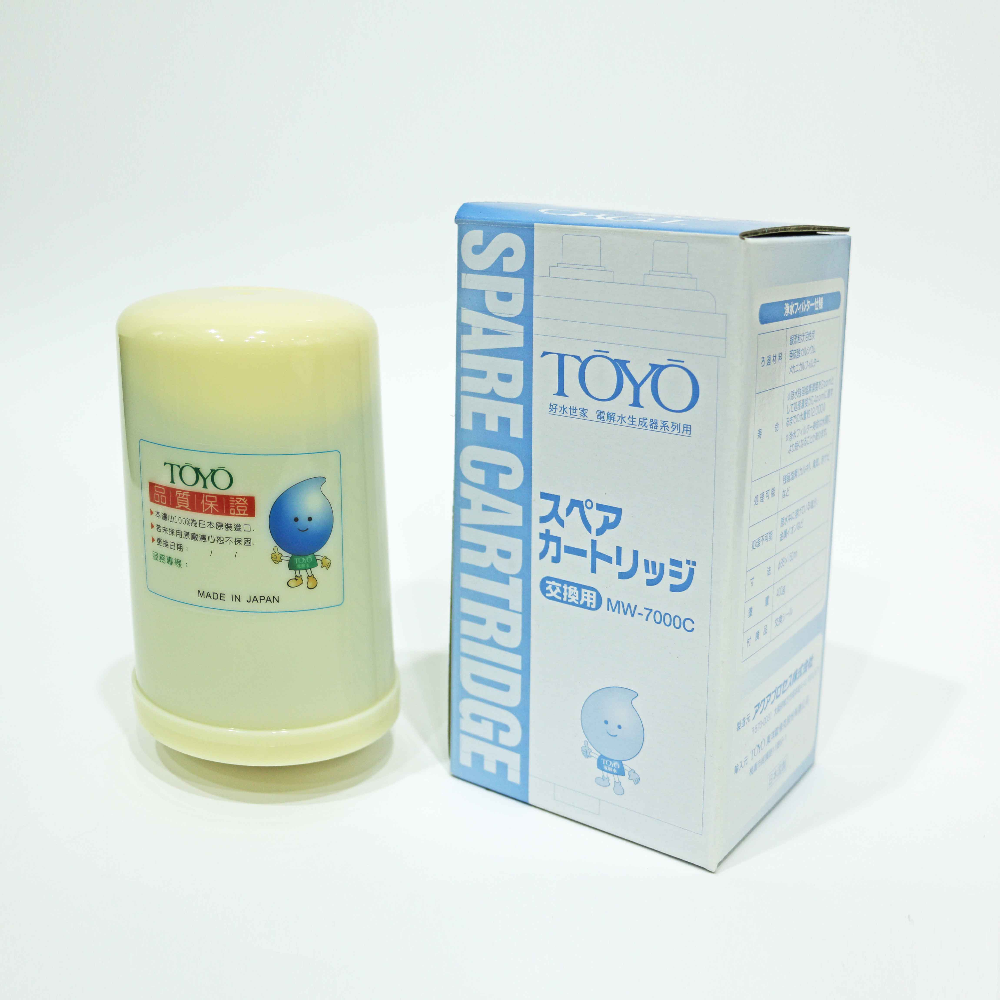
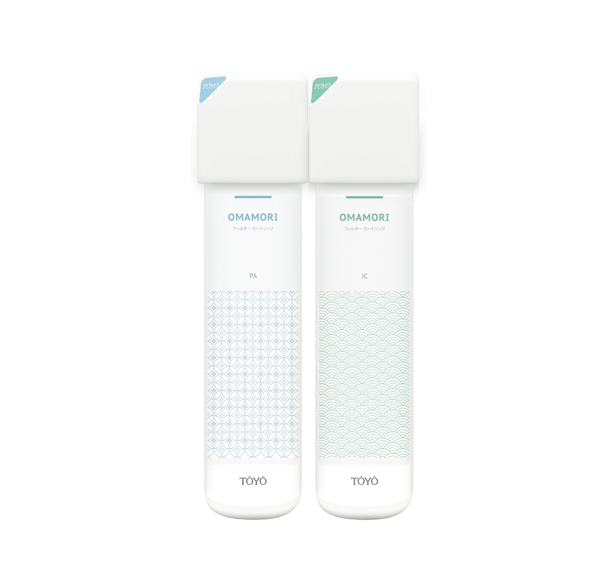
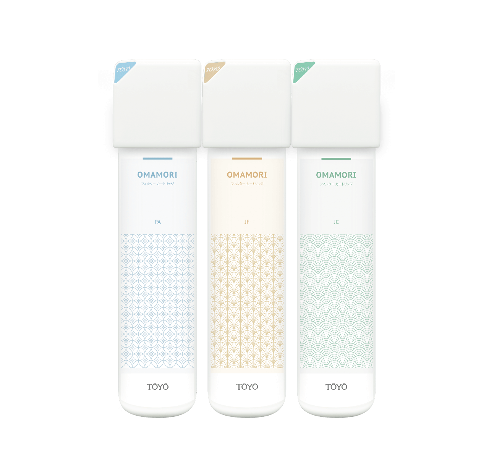

日本原裝進口鹼性離子水生成器 TYH-71GS
上型還元水素水生成器現代家庭最佳保健飲用水

商品描述
【日本原裝進口】
電解槽大、品質穩定，可連續電解出水30分鐘。
日本厚生労働省認證番號221AGBZX00254000號。
【可生成多段PH酸鹼值鹼性離子(水素)水】
鹼性水ph8.0~9.5日常保健飲用。
酸性水ph6.0洗顏美容收斂。
中性水服藥ph7.0、幼兒泡牛奶。
鹼性水pH10.0 (無刺激性)清洗蔬果去農藥殘留
【飲用鹼性離子水(水素)水5大好處】
富含負電位水素(氫)分子排除體內自由基。
鹼性水質幫助調整體質。
小分子團水易吸收。
礦物質離子化好吸收。
潔淨不含氯氣/細菌/雜質/重金屬。
【保養及維護】
建議使用3年以上，需回原廠進行保養維護，將清洗電解槽、更換管線零配件。未使用靜置2周以上，使用前請先手動逆洗30秒-60秒，並排放水10-15分鐘，若仍有狀況需回原廠進行保養維護，靜置一個月以上可另行預約客服0800-090-881到府酸洗及管線檢查。
商品內容
鹼性離子水生成器主機、日本原裝本體濾心1顆、中文商品說明書、日文商品說明書、液晶顯示中日文對照表、電解用添加食品級鈣粉、酸性水龍頭(LF無鉛國家認證) 、pH檢測液、酸鹼性水分歧栓、一年保證書。
商品規格
| 型號 | TOYO TYH-71GS |
| 電源 | AC110V 50/60HZ |
| 尺寸 | 宽250 × 深135 × 高294（mm） |
| 重量 | 约6.2kg |
| 電解能力切換 | 還元水/3階段（約pH8.5/pH9.0/pH9.5）/凈水 （約pH7.0）/酸性水 （約pH7.0） |
| 連續使用電解時間 | 常溫時連續通水30分鐘 |
| 電解生成量 | 3L/min（水壓0.1Mpa時） |
| 電解槽洗淨方式 | 自動洗淨（洗淨時由微電腦控制） |
| 電解材質 | 鈦鍍白金電極板 |
| 適合水壓 | 0.05MPa~0.45MPa 合格之水道水 |
| 適合水源 | 自來水 |
| 使用溫度 | 5℃~40℃ |
| 濾芯濾材 | 粒狀抗菌活性炭+亞硫酸鈣 |
| 濾芯遊離殘留氯 | 總過濾水量12000L以上除去率80% JIS s3201 試驗 |
| 濾芯無法除去成份 | 溶於原水中的及金屬 |
| 濾芯壽命 | 約1年，或通水12000L后（依水質差異有所不同） |
| 電源保護裝置 | 保險絲125V 5A |
| 溫度保護裝置 | 熱水保護、過熱保護 |
| 注意事項 | 1.請使用符合自來水飲用標準的水源。 2.PH10以上請勿飲用。 3.凡管路須請水電施工時，費用不含於機器售價內。 4.水壓不足的場所需另購加壓馬達組之費用。 5.凡水龍頭不適合者(例：伸縮水龍頭等)得另加工資、材料費。 6.PH值會因各地水質及水壓而有所改變。 |
安裝實例
.JPG)
.jpg)
%20%E6%8B%B7%E8%B2%9D.jpg)
.jpg)
週邊配件

TA-800T

MW-7000C（日製）

OMAMORI - 2S

OMAMORI - 3S